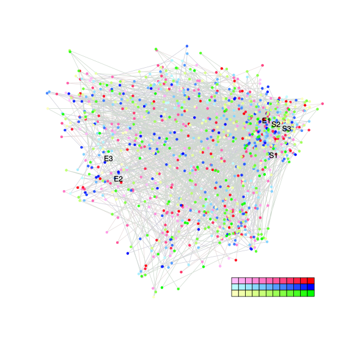
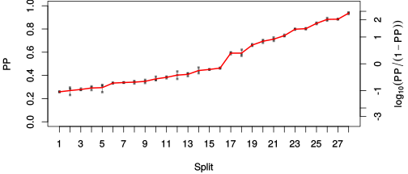
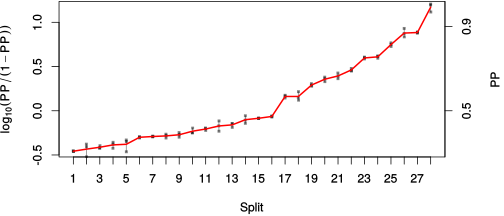

| chain # | burnin | subsample | Iterations (remaining) | command line | subdirectory | directory |
|---|---|---|---|---|---|---|
| 1 | 10000 | 1 | 90000 | /usr/local/bali-phy-3.0-beta2/bin/bali-phy E5_red_blue_clade_aa_reduced.fas -s 74939 -S LG -n E5_red-blue_aa_reduced | E5_red-blue_aa_reduced-1 | /home/willemse/data/trees/BaliPhy/all_E5_aa_reduced |
| 2 | 10000 | 1 | 90000 | /usr/local/bali-phy-3.0-beta2/bin/bali-phy E5_red_blue_clade_aa_reduced.fas -s 56471 -S LG -n E5_red-blue_aa_reduced | E5_red-blue_aa_reduced-2 | /home/willemse/data/trees/BaliPhy/all_E5_aa_reduced |
| 3 | 10000 | 1 | 90000 | /usr/local/bali-phy-3.0-beta2/bin/bali-phy E5_red_blue_clade_aa_reduced.fas -s 23859 -S LG -n E5_red-blue_aa_reduced | E5_red-blue_aa_reduced-3 | /home/willemse/data/trees/BaliPhy/all_E5_aa_reduced |
| P(data|M) = -2608.666 +- 0.296 | Complete sample: 197131 topologies | 95% Bayesian credible interval: 183757 topologies |
Phylogeny Distribution

| Partition support: Summary |
| Partition support graph: SVG |
{kind=link}
| 50% consensus | Newick (+PP) | SVG | |||||
| 66% consensus | Newick (+PP) | SVG | |||||
| 80% consensus | Newick (+PP) | SVG | |||||
| 90% consensus | Newick (+PP) | SVG | |||||
| 95% consensus | Newick (+PP) | SVG | |||||
| 99% consensus | Newick (+PP) | SVG | |||||
| 100% consensus | Newick (+PP) | SVG | |||||
| MAP | Newick (+PP) | SVG | |||||
| greedy | Newick (+PP) | SVG |
{kind=link}
{kind=link}
{kind=link}
{kind=link}
{kind=link}
{kind=link}
{kind=link}
{kind=link}
Alignment Distribution
Partition 1
| Diff | Min. %identity | # Sites | Constant | Informative | ||||
|---|---|---|---|---|---|---|---|---|
| Initial | FASTA | HTML | Diff | 1.21% | 165 | 1 (0.606%) | 134 (81.2%) | |
| Best (WPD) | FASTA | HTML | AU | 0.461% | 344 | 1 (0.291%) | 271 (78.8%) |
Mixing
{kind=link}
{kind=link}
| burnin (scalar) | ESS (scalar) | ESS (partition) | ASDSF | MSDSF | PSRF-CI80% | PSRF-RCF |
|---|---|---|---|---|---|---|
| 1826 | 1260 | 1131.076 | 0.010 | 0.034 | 1.001 | 1.008 |
Projection of RF distances for the first 3 chains3D | Variation of split PPs across chains |
Scalar variables
| Statistic | Median | 95% BCI | ACT | ESS | burnin | PSRF-CI80% | PSRF-RCF |
|---|---|---|---|---|---|---|---|
| prior | -235 | (-303.5, -174.5) | 22.5 | 12000 | 461 | 1 | 0.9991 |
| prior_A1 | -325.2 | (-390.8, -268.1) | 18.05 | 14959 | 461 | 1 | 0.9987 |
| likelihood | -2577 | (-2608, -2545) | 33.12 | 8151 | 535 | 1 | 0.9987 |
| logp | -2812 | (-2868, -2764) | 18.5 | 14591 | 488 | 1 | 1.003 |
| Heat.beta | 1 | ||||||
| Scale1 | 9.855 | (6.478, 13.98) | 2.53 | 106727 | 156 | 1 | 1.001 |
| S1.F.pi.A | 0.0538 | (0.03803, 0.07105) | 11.27 | 23954 | 369 | 1 | 1 |
| S1.F.pi.R | 0.03675 | (0.02281, 0.05227) | 12.98 | 20798 | 439 | 1 | 0.9979 |
| S1.F.pi.N | 0.02269 | (0.0125, 0.03456) | 8.576 | 31482 | 393 | 0.9994 | 1.008 |
| S1.F.pi.D | 0.03921 | (0.02292, 0.05765) | 10.72 | 25197 | 385 | 0.9999 | 1.004 |
| S1.F.pi.C | 0.06806 | (0.04786, 0.08995) | 10.02 | 26949 | 442 | 0.9998 | 1.001 |
| S1.F.pi.Q | 0.02903 | (0.01779, 0.04233) | 9.007 | 29975 | 559 | 0.9999 | 0.9994 |
| S1.F.pi.E | 0.01483 | (0.006239, 0.02502) | 8.913 | 30294 | 414 | 0.9997 | 1.001 |
| S1.F.pi.G | 0.05132 | (0.03194, 0.07285) | 9.358 | 28851 | 400 | 1 | 1.003 |
| S1.F.pi.H | 0.0285 | (0.01686, 0.042) | 9.722 | 27773 | 219 | 1 | 1 |
| S1.F.pi.I | 0.05996 | (0.04624, 0.07473) | 8.117 | 33263 | 614 | 1 | 1 |
| S1.F.pi.L | 0.1666 | (0.1399, 0.1946) | 10.43 | 25895 | 432 | 0.9996 | 1 |
| S1.F.pi.K | 0.02782 | (0.01563, 0.04192) | 19.98 | 13514 | 520 | 1 | 1.004 |
| S1.F.pi.M | 0.02662 | (0.01756, 0.03685) | 14.24 | 18959 | 653 | 1.001 | 0.9945 |
| S1.F.pi.F | 0.07517 | (0.0575, 0.09447) | 10.66 | 25320 | 341 | 1 | 1 |
| S1.F.pi.P | 0.03074 | (0.01688, 0.04598) | 8.321 | 32450 | 275 | 0.9998 | 1.002 |
| S1.F.pi.S | 0.04144 | (0.02711, 0.05707) | 16.06 | 16812 | 568 | 1.001 | 0.9955 |
| S1.F.pi.T | 0.06701 | (0.04924, 0.08637) | 8.842 | 30537 | 323 | 0.9998 | 0.9973 |
| S1.F.pi.W | 0.02367 | (0.01264, 0.03645) | 9.473 | 28502 | 485 | 1 | 1 |
| S1.F.pi.Y | 0.03798 | (0.02577, 0.05166) | 8.427 | 32039 | 487 | 0.9995 | 0.9956 |
| S1.F.pi.V | 0.09012 | (0.0716, 0.1098) | 8.106 | 33308 | 262 | 1 | 0.9936 |
| I1.RS07.meanIndelLengthMinus1 | 9.38 | (5.974, 13.78) | 18 | 14996 | 528 | 0.9999 | 1.003 |
| I1.RS07.logLambda | -3.635 | (-4.121, -3.126) | 28.39 | 9511 | 348 | 1 | 0.9991 |
| |A1| | 268 | (205, 315) | 214.2 | 1260 | 1826 | 0.9832 | 1.006 |
| #indels1 | 38 | (30, 48) | 16.09 | 16783 | 394 | 0.9167 | 0.9984 |
| |indels1| | 422 | (335, 521) | 54.54 | 4950 | 826 | 0.9892 | 1.008 |
| #substs1 | 430 | (389, 472) | 197.7 | 1365 | 1574 | 0.9775 | 1.004 |
| Scale1*|T| | 11.67 | (9.771, 13.84) | 16.23 | 16636 | 264 | 0.9999 | 0.9963 |
| |A| | 268 | (205, 315) | 214.2 | 1260 | 1826 | 0.9832 | 1.006 |
| #indels | 38 | (30, 48) | 16.09 | 16783 | 394 | 0.9167 | 0.9984 |
| |indels| | 422 | (335, 521) | 54.54 | 4950 | 826 | 0.9892 | 1.008 |
| #substs | 430 | (389, 472) | 197.7 | 1365 | 1574 | 0.9775 | 1.004 |
| |T| | 1.186 | (0.7994, 1.624) | 1 | 270003 | 233 | 0.9998 | 1 |